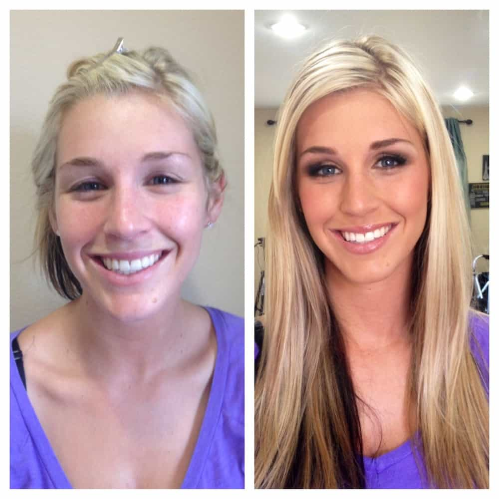

< < < Back
Always Subtract 40% From Every Woman’s Appearance – Return Of Kings
Here at Return of Kings, our columnists continually instruct men not to place women on a proverbial pedestal. Most of the time, this concerns emotional, psychological and romantic pedestalization. Yet the aspect of this phenomenon you need to know the most about and which gives life to all the others, the physical embellishment of a woman’s value (via cosmetics and photographic technology), is the one most ignored.
After all, in 2015 we are very much stuck in the heyday of L’Oreal and other conglomerates making billions from the facial illusion industry.
For every female you see on the street, in a club, at your university or in the workplace, you need to manually deduct 40% from her appearance and treat her accordingly. This needs to happen until you can automatically do the subtractions yourself. I have arrived at the figure of 40% because most women don’t lose the majority of their physical value when they wash off their makeup or non-digitize their visage. Plus, some women lose more than 40% (take the Mila Kunis photo above, for example) while others lose only around 20%. 40% is a very useful rule of thumb.
Women’s beauty routines and online self-presentation are about self-esteem and deceiving others

This is the same person on the same day. Perception is quasi-reality, but this woman’s true physical reality is much closer to the image on the left.
Don’t necessarily see the chasm between a woman’s made-up appearance and true appearance as some kind of malicious feminine (or feminist) conspiracy. Very few people in this world don’t want to be perceived as more aesthetically pleasing, whether it’s men wanting bigger biceps and washboard abs, or women desiring unblemished faces and the pretense of high cheekbones that look much less impressive sans cosmetics.
These beauty routines are also designed to improve her own confidence and perception of herself and are not only about enchanting you. For 8-16 hours a day, women want to adequately convince themselves that they are close to as alluring as the goddesses they see peppered across TV commercials and sitcoms. Like men, deep down they know it’s an act, but the emotional pull of the temporary delusion for half or two-thirds of a day is just too strong.
Nevertheless, the social benefits of being perceived as attractive are intrinsically entwined with this self-delusion. When women reach a threshold level of attractiveness, the world becomes easier, more exciting and more indulgent of them. Men acquiesce to their requests, women want to befriend them and, most importantly, they garner the intoxicating overall joys of people paying (positive) attention to them.
To think that a primary reason for women inflating their appearance is not popularity, adoration and the other byproducts of being regarded as hot is analogous to denying that the sun will set at the end of the day.
The Lady Gaga Effect
Take a gander at Lady Gaga sans makeup (and utilizing a side shot to present her “best” angle):

Now juxtapose it with her singing appearance at the Oscars:

Though far from a 10 in my book despite wearing makeup, Gaga’s attractiveness in the makeup-less shot is at least 60% less than the second photo. The exact figures depend on subjective evaluation, but I’d say Kunis’ drop, as evidenced in the main image for this article, is more dramatic still at around 70-80%. In her case, this takes her from bangable to untouchable, even if you and her were the last human beings on the planet.
The reason I have chosen Lady Gaga is that, more than perhaps any other celebrity in the world, she is obsessed with changing and promoting her own image. Raunchy provocation (or at least that’s the intention) and constant shape-shifting are behind her name being known by almost every person in the Western world under 60.
It is your job to regard practically every woman under 40 you come across as a Lady Gaga Lite, a chameleon compelled to project an image of greater color and sexual life to hide an otherwise much, much blander exterior.
The Instagram and Facebook era
Actually, this isn’t reality until she takes off the face paint. So it will get even worse.
It’s not just cosmetics you need to be wary of. Camera angles and filters are, after makeup, a girl’s best friend and distort actual appearances much more so when combined with cosmetics. Black-and-white, monochrome, sepia and other filters are all intended to heighten a female photo subject’s attractiveness and mask less appealing facial and other bodily qualities. So, too, are certain high or low angles (especially when combined with the exhibition of cleavage).
There’s a strong argument for asserting that my rule of thumb should be 40-70% for online female appearances, particularly if you have met the women in question less than three times or not at all. So if you’re looking for a real-life introduction to a certain friend of a friend, be warned. You’re bound to either be disappointed wholesale or suffer a moderate case of false advertising.
Make it a community effort, boys

This is the kind of disparity you want between a woman’s true and contrived appearances. But you never know until everything’s off.
Men have to be more judicious and discerning as an entire gender. Naturally, being less easily convinced about artificial presentations is good for your own life. It is also a characteristic we should be instilling in other men. Back-of-the-brain knowledge of the harsh truths about idealized female projections is not enough and most males still, tragically, respond as if the illusion were true.
Fundamentally, no woman is truly hot until you’ve seen her in the shower or, to a lesser extent, woken up beside her the next day when everything has rubbed off.
What’s the point of getting excited about a woman who’s just not worth your time… or lust?
Read More: What’s The Difference Between Posting Your Cleavage And Showing Your Bank Balance On Instagram?